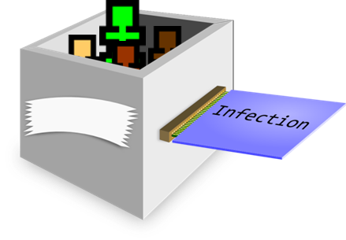

Simulacron is our simulation engine. We have designed this to emphasise generality and modularization, enabling a wide range of problems to be studied. It uses modules to achieve this flexibilty; they are isolated enough to not interfere with one another, but not so much that they cannot cooperate.
Simulacron uses two fundamental abstractions: cell and peeps. Cells are abstract locations, and peeps are abstract individuals that have a location. They are made to interact through the use of fields. These provide attachment of arbitrary data to any cell or peep. For example, fields may be a state of infection, a name, a schedule or behavioural pattern etc. that are used by modules to simulate the problem being studied. Cells also form the unit of parallelism, with multiple cells being simulatable simultaneously, based on available hardware.
Refinery and Monotony are infection analysis tools that allow automatic matching of historical or surveillance data. Spiderweb is an infection tracing tool to display the results of infection simulations.